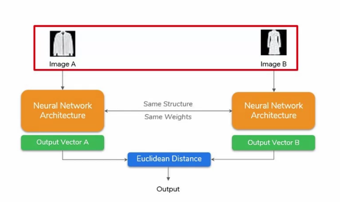
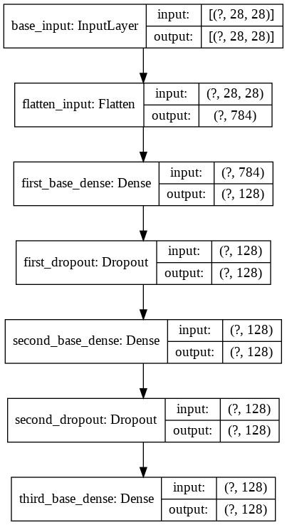

model = Model(inputs = input_layer , outputs = [y1_output,y2_output])
1 2 3 4 5 6 7
# regression problem : https://archive.ics.uci.edu/ml/datasets/Energy+efficiency # Specify the optimizer, and compile the model with loss functions for both outputs optimizer = tf.keras.optimizers.SGD(lr=0.001) model.compile(optimizer=optimizer, loss={'y1_output': 'mse', 'y2_output': 'mse'}, metrics={'y1_output': tf.keras.metrics.RootMeanSquaredError(), 'y2_output': tf.keras.metrics.RootMeanSquaredError()})
Multi Input Model (Siamese Network)
Example
correlation / difference / similarity between 2 image

1 2 3 4 5 6 7 8 9 10 11 12 13 14
# base model : similar for both inputs
definitialize_base_network(): input = Input(shape=(28,28,), name="base_input") x = Flatten(name="flatten_input")(input) x = Dense(128, activation='relu', name="first_base_dense")(x) x = Dropout(0.1, name="first_dropout")(x) x = Dense(128, activation='relu', name="second_base_dense")(x) x = Dropout(0.1, name="second_dropout")(x) x = Dense(128, activation='relu', name="third_base_dense")(x)
return Model(inputs=input, outputs=x)
base_network = initialize_base_network()

base network
1 2 3 4 5 6 7 8 9 10 11 12 13 14 15 16 17 18 19
# siamese network
# create the left input and point to the base network input_a = Input(shape=(28,28,), name="left_input") vect_output_a = base_network(input_a)
# create the right input and point to the base network input_b = Input(shape=(28,28,), name="right_input") vect_output_b = base_network(input_b)
# measure the similarity of the two vector outputs # using Lamda we can use custom function output = Lambda(euclidean_distance, name="output_layer", output_shape=eucl_dist_output_shape)([vect_output_a, vect_output_b])
# specify the inputs and output of the model model = Model([input_a, input_b], output)
# plot model graph plot_model(model, show_shapes=True, show_layer_names=True, to_file='outer-model.png')